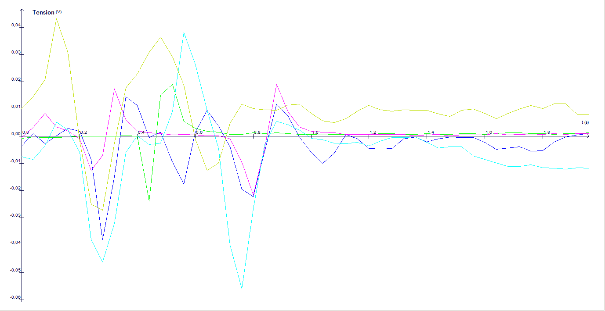
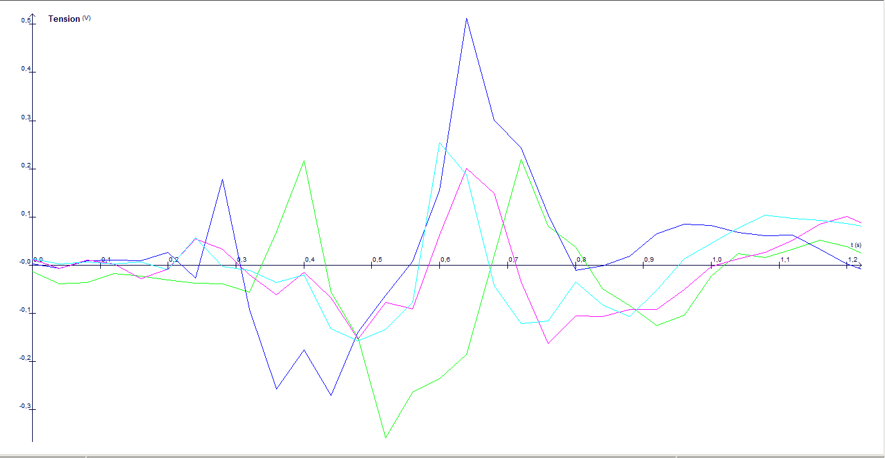

Nous avons vu dans un premier temps le fonctionnement du corps, et comment il réagit, étape par étape, au temps de réaction. Ceci dit, cette réaction varie de personne en personne. Serait-ce la conséquence de la nature des stimulus, et comment notre corps réagi face aux différents stimulus?
Expérience ExAO, observer les différences de réaction entre un stimulus visuel et auditif
Problème et Hypothèse
On se demandait s’il y avait une véritable différence dans le temps de réaction en fonction du stimulus utilisé pour obtenir une réaction. On sait qu'un stimulus ne prend pas le même temps pour arriver au système nerveux central afin d’être traité en fonction d’où le stimulus à été détecté: le signal d’un stimulus qui a été détecté sur le bout d’un doigt de pied mettra plus de temps à arriver au cerveau qu’un stimulus qui active des neurones dans le cou. On a donc décidé de se focaliser sur la différence entre les stimuli visuels et auditifs, tous deux des stimuli reçus à une distance plus ou moins égale au cerveau. Le temps entre le moment où le cerveau reçoit l'information et le moment où un stimulus auditif a été détecté devrait être négligeable comparé à celui d'un stimulus visuel.
Est-ce que le temps de réaction varie-t-il entre ces deux différents stimuli?
On suppose qu’on réagit plus vite à un stimulus visuel étant donné que les ondes électro-magnétiques se déplacent beaucoup plus vite que les ondes sonores. Donc, si un stimulus visuel est converti en potentiel d’action aussi rapidement qu’un stimulus auditif et que ces deux stimuli prennent autant de temps pour arriver au cerveau pour être traités, on devrait observer ce qu’on a supposé.
Protocole Expérimental
Pour mesurer la différence dans le temps de réaction entre un stimulus visuel et un stimulus auditif, nous avons utilisé le programme “ExAo”. Ce test consiste à mesurer la vitesse qu’une personne prend pour réagir et fléchir le mollet après un stimulus. Dans ce cas, le stimulus est un marteau qu’on tape sur un bureau. Lorsque le marteau rentre en contact avec le bureau, le chronomètre démarre et le programme commence à enregistrer ce que les électrodes placées sur le tibia mesurent. Lors d’une contraction, les électrodes vont mesurer une augmentation dans le potentiel de membrane du mollet. Les sujets testés devront donc fléchir leur mollet lorsqu’ils entendent ou voient le marteau taper sur le bureau en fonction de si on mesure le temps de réaction auditif ou visuel.
Nous avons testé quatre individus et chacun a fait cinq tests auditifs et cinq tests visuels.
Résultats
Malheureusement, à cause de problèmes techniques, nous avons seulement pu avoir des résultats concluants pour un individu. Le reste du temps, les électrodes n'enregistraient rien où donnaient des valeurs très surprenantes que nous n’avons pas pu analyser.
 Conclusion
Étant donné que nous avons pu seulement obtenir des résultats des temps de réaction d’une seule personne, nous n’avons donc pas pu écrire une conclusion plausible. D’après le seul résultat obtenu, il semblerait que le temps de réaction visuelle soit plus rapide comme nous l’avons supposé dans notre hypothèse.
Les différences entre stimuli visuel et auditif
La force électromagnétique se décline en plusieurs ondes dont les noms sont familiers: les rayons X, les micro-ondes, les ultra-violets, les infrarouges… Ce qui différencie une onde d’une autre est sa longueur, autrement dit sa périodicité spatiale des oscillations, la distance qui séparent deux oscillations, qu’on note ƛ. La longueur d’une onde est inversement proportionnelle à sa fréquence, c’est-à-dire plus une onde est courte, plus sa fréquence est élevée. Plus nous nous dirigeons vers des ondes à petites longueurs, plus la fréquence des ondes croît, et vice-versa. Ce que nous appelons lumière correspond à une infime tranche de cette vaste panoplie d’onde. La lumière est en fait le spectre visible de l’électromagnétisme, fait d’ondes dont la longueur se trouvent entre 400 et 700 manomètres (nm) de longs. La stimulation visuelle de l'homme se fait exclusivement par les ondes se trouvant dans cet intervalle de longueur. Une réaction face à un stimulus visuel est en fait une réaction à des ondes électromagnétiques dont les longueurs varient entre 400 à 700 nm de longs, qui ont pénétrés l’enceinte de l’œil et produisent une succession de réactions chimiques et nerveuses résultant en un mouvement mécanique.
Le son est une vibration mécanique qui se propage sous forme d’ondes longitudinales. Les hommes ressentent ces vibrations grâce à l'ouïe. Dans un milieu compressible, le plus souvent dans l'air, le son se propage sous forme d'une variation de pression crée par la source sonore. Un haut-parleur, par exemple, utilise ce mécanisme. Seulement la compression se déplace et non les molécules. Lorsque l'on observe des ronds dans l'eau, les vagues se déplacent, mais l'eau reste au même endroit, elle ne fait que se déplacer verticalement et non suivre les vagues. Le son se propage également dans les solides sous forme de vibrations des particules élémentaires appelées phonons. Là encore, seule la vibration se propage, et non les atomes qui ne font que vibrer très faiblement autour de leur position d'équilibre.
La lumière se déplace à une vitesse proche de 300 000 km/s, et le son à 0.34 km/s (dans l’air). Cette grande différence de vitesse peut laisser supposer que nous réagissons beaucoup plus rapidement à un stimulus visuel qu’à un stimulus auditif.
Si vous voulez en savoir plus sur qu'est ce qu'un stimulus et les différents types qui existent, cliquez ici.
EXPÉRIENCE SUR SITE: VISUEL VS AUDITIF
Après trois séances de TPE avec peu de succès en utilisant le logiciel ExAo et les électrodes, nous avons donc décidé de programmer nous-même un test pour mesurer le temps de réaction visuel et auditif d’individus.
Problème et Hypothèse
Le même problème se pose toujours. Nous ne pouvons toujours pas affirmer que l’on réagit à un stimulus visuel plus rapidement qu’à un stimulus auditif, même si notre première expérience semble supporter cette idée: elle nous a pas provisionné avec assez de résultats.
Est-ce que le temps de réaction varie-t-il donc entre ces deux différents stimuli?
On suppose toujours que le temps de réaction à un stimulus auditif sera plus long que le temps de réaction à un stimulus visuel. De plus, notre première expérience semble supporter cet avis.
Protocole Expérimental
On a programmé un site pour tester le temps de réaction auditif et visuel. Lorsque l’on arrive sur la page du test, il suffit de cliquer sur la page pour commencer le teste et en fonction de si on test le temps de réaction à un stimulus auditif ou visuel un son va être joué ou sinon l’écran va changer de couleur dans un intervalle de temps indéfini entre une et cinq secondes. Lorsque le bruit est joué ou l’écran change de couleur, la personne testée doit cliquer sur l'écran le plus vite possible et le programme va enregistrer le temps que l'utilisateur a pris pour réagir au stimulus. Une fois que la personne testée a réagi cinq fois à un stimulus, celle-ci peut soumettre ses résultats à notre serveur pour qu’on puisse les enregistrer dans une base de données. Une fois le site fait, on a partagé le lien pour avoir le plus de résultats possible. On a obtenu un total de 8 résultats de temps de réaction auditifs et visuels.
Résultats
Après avoir fait la moyenne des 8 résultats obtenus, nous trouvons qu’en moyenne, on réagit plus rapidement à un stimulus auditif qu’à un stimulus visuel. Le temps de réaction moyen à un stimulus visuel est de 328ms alors que le temps de réaction à un stimulus auditif est de 279ms en moyenne.
Conclusion
Contrairement à ce qu’on avait supposé, la tendance est qu’on réagit plus rapidement à un stimulus auditif qu’à un stimulus visuel. Le corps réagit donc plus rapidement à un stimulus auditif que visuel. Ceci explique pourquoi un conducteur réagit plus souvent à un klaxon plus rapidement qu’à un appel de phares. En effet, afin d’éviter un accident, il serait favorable d’utiliser le klaxon que les appels de phares.
Il semble donc que la première manipulation qu’on a faite pour déterminer s’il y avait une différence de temps de réaction entre un stimulus auditif et visuel n’a pas bien été faite. Les résultats de cette dernière expérience avec un plus grand échantillon montrent qu’on réagit plus rapidement à un stimulus auditif qu’à un stimulus visuel ce que contredit les résultats trouvés précédemment. En faisant des tests en utilisant le site avec la personne qu’on a testé avec le logiciel ExAo, on a trouvé qu’en réalité, cette personne réagit plus lentement à un stimulus auditif. On a donc refait le teste sur un autre ordinateur et on a obtenu des résultats en cohérence avec ce qu’on a observé grâce aux résultats obtenus sur le site. Il semble en faîte que le premier ordinateur sur lequel le teste a été réalisé dédicace trop de temps à traiter le son. On peut expliquer la réaction plus lente aux stimuli auditif dans la première expérience par le fait que le test a été fait dans une salle de cours avec beaucoup de perturbateurs sonores. Le bruit du marteau qui tape la table n’est donc peut-être pas assez fort pour stimuler une réaction spontanée au stimulus avec tout le bruit d'ambiance. On rentrera plus en détaille sur comment des perturbateurs sonores peuvent ralentir notre temps de réaction significativement.
Comment expliquer la différence dans le temps de réaction
D’après nos expériences, il semble donc que la majorité des personnes réagissent à un stimulus auditif plus rapidement qu’à un stimulus visuel.
Différence dans le temps de conversion en potentiel d’action
Comme nous avons expliqué précédemment, la conversion d’un photon en signal bioélectrique est très complexe alors que la conversion d’une onde sonore en signal bioélectrique est très simple.
Pour convertir un photon en signal bioélectrique, il faut 6 étapes:
- Lumière arrive sur le rétinène
- Le rétinène change de conformation
- Activation de la protéine G
- Libération de fraction alpha
- Enzyme phosphodiétérase s'active
- Détruit GMPc Plus d'explication
Au contraire, la conversion d’une onde sonore en stimulus bioélectrique est faite en une seule véritable étape très courte: des vibrations de cellules ciliées causent l’activation de canaux ioniques
La vision requiert donc beaucoup plus d’étapes, certaines qui sont lentes. Ceci se traduit par un temps de réaction plus long pour les stimulus visuels.. Par contre, le temps de réaction auditif est limité physiquement à environ 60ms. La conversion de photons en un stimulus bioélectrique prend donc beaucoup plus de temps que la conversion d’une onde sonore en un stimulus bioélectrique qui serait utilisée par les neurones pour communiquer. Ceci explique donc bien pourquoi on observe une tendance générale de réagir plus vite à un stimulus auditif qu’à un stimulus auditif.
Différence dans le temps que le signal met pour arriver au cerveau
On sait que les stimuli visuels sont analysés par le cerveau dans le lobe occipital localisé à l’arrière du cerveau. Les stimuli auditifs, eux, sont analysés dans le lobe temporal, localisé juste à côté de l’oreille. Le signal bioélectrique qui provient d’un stimulus visuel prend donc plus de temps à arriver à l’endroit où il sera analysé que le stimulus auditif. Des recherches produites par Kemp montrent qu’il suffit d’environ 8 à 10 millisecondes pour qu’un stimulus auditif arrive à l’endroit où il sera analysé; comparé aux 20-40 millisecondes qu’un stimulus visuel prend. Cette autre étape que le stimulus doit traverser avant de pouvoir obtenir une réaction ralentie encore plus le temps de réaction visuel comparé au temps de réaction auditif.
Quand-est-ce que le temps de réaction auditif devient-t-il plus lent que le temps de réaction visuel
Notre temps de réaction face à un stimulus auditif est bien plus rapides dans des conditions contrôlées et théoriques, comme face à un ordinateur. Ceci dit, la distance à laquelle le point d’origine du stimulus se trouve joue un rôle non négligeable vis-à-vis de notre temps de réaction. En effet, la vitesse à laquelle se déplacent les stimuli visuels et auditifs ont un impact concret lorsque leur distance relatif à un individu croît:
temps en lequelle nous réagissons à un stimulus = temps que le stimulus arrive aux capteurs du corps (t(son) ou t(lumière)) + notre temps de réaction (t(réaction audio) ou t(réaction visuel))
D'aprés les résultats de notre experience, on a:
En mettant en oeuvre nos résultats, ces calculs montrent qu’à une distance de 16.6 mètres, nous réagissons plus vite à la lumière qu’au son. Dans la voiture, il serait donc plus juste de lancer un appel de phare lorsqu’une voiture se trouve à une vingtaine de mètres ou plus. Ceci dit, nos calculs restent très approximatifs." with "Ceci dit, les valeurs que nous avons choisit restent aproximatives puisque chaque personne à un temps de réaction différent. Comment pouvont nous expliquer cela?